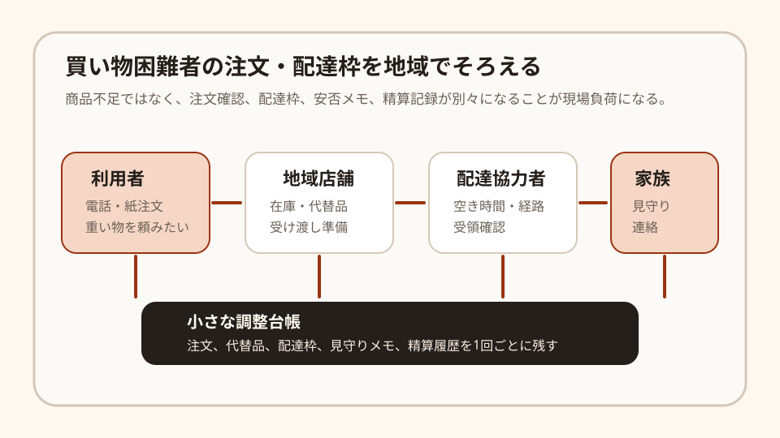

Question Note
買い物困難者の注文・配達枠のずれを埋める小規模サービス案

全体像
農林水産省は、食品アクセス問題について、高齢化や単身世帯の増加、地元小売業の廃業、商店街の衰退などにより、 食料品の購入や飲食に不便や苦労を感じる人が増えている社会課題だと整理しています。 令和7年度の全国市町村アンケートでは、回答市町村の 1,106市町村、89.3%が「対策が必要」または「ある程度必要」と回答しています。
つまり課題は「近くに店がない」だけではありません。 注文を誰が聞いたか、店側が代替品をどう確認するか、配達枠を誰が埋めるか、見守りメモをどこに残すか が分断されることで、小さな支援ほど続けにくくなります。
どの社会問題を切り出すか
移動販売車や宅配網を新しく作るには車両、人員、商品仕入れが必要で、個人の初年度事業としては重くなります。 そこで狙いを 既に地域にある個人商店、社会福祉協議会、自治会、配達協力者の注文・配達調整 に絞ります。
| 現場課題 | 何が起きるか | 既存手段の限界 |
|---|---|---|
| 注文が電話と紙に散る | 同じ利用者の注文変更やキャンセルが、店、家族、配達者に伝わらない。 | 電話メモは早いが、最新状態と履歴が残りにくい。 |
| 配達枠が読めない | 重い米や水だけ集中し、協力者の空き時間と合わない。 | LINEグループでは、誰がどの便を担当するか後から追いにくい。 |
| 見守りと精算が別管理 | 不在、体調変化、支払い残などが、次回対応に引き継がれない。 | 一般的な宅配アプリは、地域福祉の軽い見守り記録に合いにくい。 |
既存の仕組みで足りない点
- 移動販売や宅配は商品を届けられるが、地域の見守りメモや家族連絡まで一体では残りにくい。
- 自治会や社会福祉協議会の表計算は柔軟だが、配達枠、注文、代替品確認が自動ではつながらない。
- 一般的なECや配送管理は本格的すぎて、電話注文中心の高齢者支援には入力負荷が高い。
サービス案
地域の小規模な買い物支援向けに、電話注文を受ける人、地域店舗、配達協力者、家族連絡を 1回の配達単位でそろえる「買い物支援ミニ台帳」を提供します。 商品販売ではなく、既存の商店と支援者の間にある調整作業を軽くするサービスです。
- 利用者ごとに、よく頼む品、重い物、避けたい食品、支払い方法を登録する。
- 電話注文を最小項目で入力し、店側に確認リストとして渡す。
- 在庫切れや代替品を「確認待ち」「家族確認済み」のように状態管理する。
- 配達枠と担当者を一覧化し、不在、体調変化、次回注意を軽く記録する。
- 月末に、配達回数、未収、見守りメモ、自治体報告用のCSVを出せる。
100万円規模に抑えた市場設定
全国の買い物困難者全体ではなく、初年度は 1県内の中小自治体、地域包括支援センター、社会福祉協議会、商店会を通じて接点を持てる80地区 を到達可能市場と仮定します。 ここから25%ではなく、まず25%のさらに手前の20地区に導入できれば、個人でも支援できます。
| 項目 | 仮定 | 結果 |
|---|---|---|
| 到達可能地区数 | 80地区 | 1県内で説明会、紹介、個別面談が回る範囲 |
| 初年度導入 | 20地区 | 商店、自治会、支援団体の小単位で導入 |
| 月額利用料 | 4,000円/地区 | 960,000円/年 |
| 導入支援 | 8,000円 x 8地区 | 64,000円 |
| 初年度売上予想 | 合計 | 1,024,000円 |
ここでの市場規模は全国TAMではなく、直接説明し、設定を手伝い、運用改善を聞き取れる 実行可能市場です。
収益モデル
- 基本: 地区または運営団体ごとの月額利用料
- 追加: 初期設定代行、利用者台帳の初期投入、帳票テンプレート作成
- 追加: 商店会、社会福祉協議会、自治体向けの導入説明会
商品売上の手数料モデルも考えられますが、買い物支援は単価が小さく、欠品や代替品も多いため不安定です。 初期は地域の調整負荷を減らす固定課金の方が読みやすいです。
必要なシステム要件と支出
| 領域 | 要件・使い道 | 年額の目安 |
|---|---|---|
| フロント | スマホで注文、配達枠、不在メモを入力できるWeb画面 | 0円〜 |
| バックエンド | 利用者、注文、代替品、配達枠、担当者、精算状態の管理 | 36,000円 |
| 通知 | メール中心。家族確認や緊急時だけSMSを使う | 18,000円 |
| 帳票・記録 | 月次CSV、配達一覧PDF、簡易監査ログ | 12,000円 |
| 運用 | 独自ドメイン、監視、バックアップ、問い合わせフォーム | 24,000円 |
| その他支出 | チラシ印刷、説明会資料、単発の法務・個人情報確認 | 70,000円 |
| 年間支出 | 合計 | 160,000円 |
AIを使った開発見積もり
AIを使う前提では、画面のたたき台、CRUD、CSV出力、PDF帳票、テストデータ作成を短縮できます。 ただし、利用者の個人情報、見守りメモの扱い、家族連絡の同意、商店側の運用負荷は人が確認する必要があります。
| 作業 | AIで短縮できること | 人が責任を持つこと | 目安 |
|---|---|---|---|
| 要件整理 | ヒアリングメモから画面項目と業務フローを整理 | 現場で本当に入力できる項目に削る | 3〜5日 |
| プロトタイプ | 注文画面、配達枠画面、一覧画面の初期実装 | 高齢者支援の現場で読みやすい導線に直す | 1〜2週間 |
| 本実装 | 認証、CRUD、CSV、PDF、権限分けの実装補助 | 個人情報、権限、バックアップ、障害時手順を決める | 2〜3週間 |
| 検証・修正 | テストケース、ダミーデータ、不具合原因の洗い出し | 実配達に近い運用リハーサルを行う | 1週間 |
合計では、1人開発でも4〜7週間で初期版を作れる想定です。 AIは開発時間を短縮しますが、地域関係者との合意形成と運用設計は省略できません。
売上・支出・利益
売上 - 支出 = 利益
| 項目 | 金額 | 補足 |
|---|---|---|
| 売上 | 1,024,000円 | 月額4,000円 x 20地区 x 12か月 + 導入支援64,000円 |
| 支出 | 160,000円 | システム固定費、通知、帳票、運用、説明会資料、専門確認 |
| 利益 | 864,000円 | 実行者の作業時間は別途。副業または小規模検証として成立する水準 |
必要人数と人材要件
この規模では、実行者1名 + 単発外注を前提にします。
- 実行者: Webアプリを作れ、地域店舗、社会福祉協議会、自治会と会話できる人
- 補助外注: 個人情報保護、利用規約、会計処理、アクセシビリティ確認を単発で依頼
- 望ましいスキル: CRUD実装、帳票設計、スマホUI、業務整理、地域調整、電話注文業務への理解
リスクと最初の検証
- 支払い意思: 商店や支援団体が月額4,000円を払うほど困っているか、最初に確認する。
- 入力負荷: 電話注文を受ける人にとって、紙より遅い画面なら続かない。
- 責任範囲: 見守りメモを扱うため、緊急対応、家族連絡、個人情報の範囲を明確にする。
最初は3地区、各10利用者程度で1か月だけ試し、注文変更、配達漏れ、未収、家族確認の件数が減るかを見ます。
結論
このテーマは、買い物支援の全国網を作るのではなく、 既にある地域の買い物支援の注文・配達・見守り記録のずれを整える 方向に切ると小さく成立します。 商品を売る事業ではなく、地域の支援を続けるための調整台帳なら、100万円規模でも回せます。